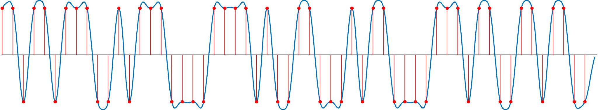
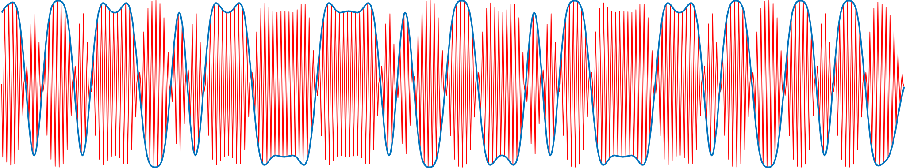
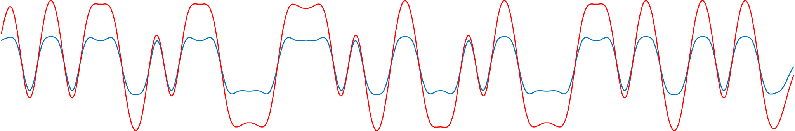
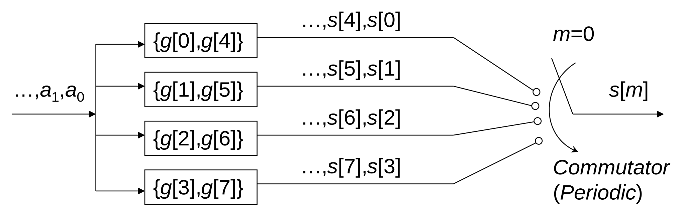

Lab 5 Primer
Contents
Lab 5 Primer¶
The range of complexity for a pulse amplitude modulation (PAM) transceiver system can vary drastically. A working version that demonstrates the core principles can be simulated with just a few lines of code. In practice, many additional subsystems need to be added for reliable operation.
Simulation¶
In simulation, pulse amplitude modulation is relatively straightforward, and can be achieved with just a handful steps.
1. Mapping data to pulses¶
The first step in any digital communication system is serialization, the process of converting a useful data structure into a stream of bits. For example, the following MATLAB code serializes the ascii string “meatball” into an array of 56 bits.
>> serialized_data = reshape((dec2bin(uint8('meatball'))'),[1,56])
serialized_data =
'11011011100101110000111101001100010110000111011001101100'
In 2-PAM, we map a bit of ‘0’ to a pulse with an amplitude \(-d\) and a bit of one to a pulse with an amplitude of \(+d\). A common pulse shape is the raised cosine
upsampled_data = upsample(str2num(serialized_data')*2-1,16);
pulse_shaping_filter = rcosdesign(0.8,4,16,'normal');
sequence_of_pulses = conv(upsampled_data,pulse_shaping_filter,'same')
figure; plot(sequence_of_pulses); hold on; stem(upsampled_data.*max(pulse_shaping_filter));

2. Modulation and demodulation¶
The signal above is what we call the baseband signal. Before transmitting, we want shift the spectrum to higher frequencies in a way that can be reversed at the transmitter. A simple method is with sinusoidal modulation and demodulation
f0 = 12000; fs = 48000; w0 = 2*pi*f0/fs; n = 1:length(sequence_of_pulses);
modulated = sequence_of_pulses.' .* cos(w0*n);
figure; plot(sequence_of_pulses); hold on; plot(modulated);

Demodulation can be achieved by once again multiplying by the carrier. The second multiplication by cosine introduces frequency components at \(\pm f_c\), which can be removed by a low pass filter.
demodulated = modulated .* cos(w0*n);
recovered_pulses = conv(demodulated,pulse_shaping_filter,'same');
figure; plot(sequence_of_pulses); hold on; plot(recovered_pulses);

3. Mapping pulses to data¶
We end up with a signal that can be downsampled and quantized to recover the original data
>> recovered_data = downsample(recovered_pulses,16) > 0
recovered_data =
'11011011100101110000111101001100010110000111011001101100'
What could go wrong?¶
The example above demonstrates the most important techniques used in PAM. However, it leaves out many important steps.
Transmitter¶
In the 2-PAM system described above, every bit of data required 16 samples to represent. If we want to transmit data at a respectable bit rate, we need to ensure that each step is very efficient.
Polyphase filter bank for pulse shaping¶
Recall that we upsampled the data by a factor of \(L\) before applying the pulse shaping filter. Using the standard FIR filter structure, this would mean that a large fraction, \(\frac{L-1}{L}\), of the multiply-accumulate operations used in the filter are wasted on zeros! The polyphase filterbank structure solves this problem.

The diagram above depicts the polyphase structure to implement an 8-tap FIR filter with impulse response \(g[n]\) after upsampling by a factor of \(L=4\). The filter coefficients \(g[n]\) are divided into \(L\) smaller filters of length \(\frac{8}{L}=2\). Even though the upsampling operation quadrupled the sampling rate of the output, these smaller filters are allowed to run at the original rate, reducing the computational cost by a factor of roughly \(L=4\). By allowing the commutator the cycle through these four smaller filters, we produce the same output signal as if we had upsampled first, then applied an FIR filter at a higher rate.
Receiver¶
The receiver is where most of complexities occur. In the simulation above, we assumed that the receiver’s carrier exactly matches the transmitter (both in frequency and phase). We assumed that the signal traveled from transmitter to receiver with no distortion or time delay. We also assumed that the transmitter and receiver have exactly the same sampling rates so that every symbol was separated by exactly 16 samples. Though these assumptions are rarely true in practice, each type of error can be addressed by adding an appropriate subsystem.
Costas loop for carrier recovery¶
The Costas loop is one way to track the phase \(\theta\) using an iterative algorithm. When processing the \(k\)th sample at the receiver, the Costas loop produces the next phase estimate \(\theta[k+1]\) based on the following rule:
where \(r[k]\) is the received signal and \(w_0\) is the carrier frequency.
For an in-depth discussion of the Costas loop, see Software Receiver Design by C. Richard Johnson, Jr., William A. Sethares and Andrew Klein, section 10.4.
Power maximization for timing recovery¶
For an in-depth discussion of timing recovery via output power maximization, see Software Receiver Design by C. Richard Johnson, Jr., William A. Sethares and Andrew Klein, section 12.4.